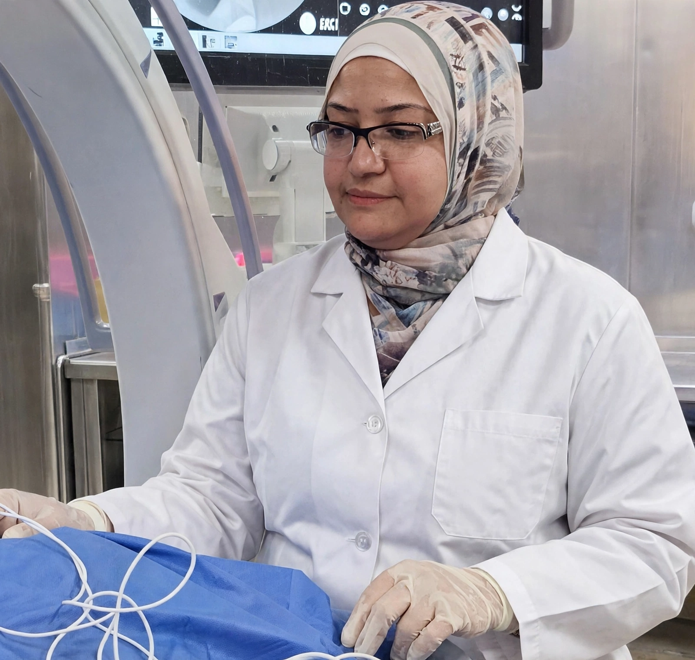

مركز PMC لعلاج الألم والعلاج التداخلي
علاج الألم
بدون جراحة
حلول متقدمة لعلاج آلام العمود الفقري والمفاصل بأحدث تقنيات العلاج التداخلي، بإشراف أ.د. دينا التركي.
- بدون جراحة
- بدون تخدير كلي
- العودة للمنزل في نفس اليوم
عن الدكتورة
أ.د. دينا التركي
أستاذ (م) علاج الألم – كلية طب القصر العيني | استشاري علاج الألم والعلاج التداخلي
أستاذ (م) علاج الألم بكلية طب القصر العيني، جامعة القاهرة (مدرس Senior Lecturer منذ أكتوبر 2006)، واستشاري علاج الألم والعلاج التداخلي بالقصر العيني (المنيل). علاج آلام العمود الفقري والمفاصل بدون جراحة، وعلاج الانزلاق الغضروفي وخشونة المفاصل بالتدخل المحدود.
-
مدرس – Faculty of Medicine Kasr Al Ainy, Cairo University (منذ أكتوبر 2006) -
استشاري علاج الألم – القصر العيني، المنيل -
تقييم شامل لسبب الألم قبل اقتراح أي إجراء -
رعاية تبدأ بالاستماع ومناقشة الخطة مع المريض -
خيارات بدون جراحة تُحدد حسب كل حالة
تُناقش الخطة العلاجية بعد التقييم، وقد تختلف الخيارات من شخص لآخر حسب الحالة.

أحدث تقنيات العلاج التداخلي بدون جراحة
إجراءات متقدمة وموجهة بأحدث أجهزة التردد الحراري والأشعة التداخلية لعلاج الألم المزمن بأعلى دقة وأمان، تحت إشراف أ.د. دينا التركي وبدون تخدير كلي أو فتح جراحي.
-
دقة مليمترية
التردد الحراري الدقيق (Radiofrequency)
تقنية متطورة لتسكين جذور الأعصاب المسببة للألم المزمن في فقرات الظهر، الرقبة، ومفصل الركبة بأعلى درجات الأمان والفاعلية.
علاج جذور أعصاب العمود الفقري علاج خشونة مفصل الركبة المزمنة تسكين يدوم لفترات طويلة بأمان
-
موجه بالأشعة والسونار
الحقن العلاجي الموجه بالأشعة
حقن جذور الأعصاب ومفاصل الفقرات بدقة مليمترية باستخدام الأشعة التداخلية أو السونار لتخفيف الالتهاب وتسكين الألم فورياً.
حقن جذور الأعصاب المضغوطة حقن البلازما (PRP) والزيت للمفاصل تخفيف فوري للالتهاب بدون ألم
-
تدخل محدود
علاج الغضروف بالتدخل المحدود
خيارات غير جراحية متقدمة تشمل تقليص وتبخير الغضروف وتخفيف الضغط العصبي بدون جراحة تقليدية وبنفس اليوم.
بدون فتح جراحي أو غرز تسليك التصاقات القناة العصبية خروج للمنزل في نفس اليوم
-
أمان وراحة تامة
تقنيات الولادة بدون ألم
بروتوكولات حديثة تشمل الإبيدورال وTAP block والتحكم الذاتي لتجربة ولادة طبيعية أو قيصرية آمنة ومريحة تماماً.
تخدير إبيدورال آمن للولادة الطبيعية تقنية TAP Block للولادة القيصرية أجهزة التحكم الذاتي في الألم (PCA)
الحالات التي نعالجها
تشخيص وعلاج أدق مسببات الألم
استعادة الحركة والتخلص من الألم بأمان. اختيار أي إجراء يعتمد على التقييم والتشخيص، ولا يناسب الإجراء نفسه جميع المرضى.
-
علاج آلام الظهر
تقييم سبب الألم ومناقشة الخيارات المناسبة بما فيها التردد الحراري أو الحقن العلاجي حسب الحالة.
-
علاج آلام الرقبة
فحص وتقييم الأعراض قبل تحديد خطة العلاج الأنسب لكل حالة.
-
علاج خشونة الركبة
تُقيّم شدة الخشونة ووظيفة المفصل، وقد تُناقش وسائل متعددة لتخفيف الألم بحسب الحالة.
-
علاج عرق النسا
يبدأ التعامل بتقييم سبب الألم والأعراض المصاحبة، ثم تُناقش الخيارات الممكنة وفق التشخيص.
-
علاج العصب الخامس
بعد التقييم، قد يُبحث التردد الحراري ضمن الخيارات المناسبة لبعض الحالات.
-
علاج التهاب الأعصاب الطرفية
تقييم الألم العصبي ومناقشة خطة للمساعدة على تخفيفه بما يلائم الأعراض.
-
علاج الحزام الناري
يمكن تقييم الألم العصبي المستمر بعد الحزام الناري ومناقشة خيارات التخفيف المناسبة.
-
تمزق أوتار الكتف
يُحدد الفحص والتقييم ما إذا كانت خيارات علاج الألم مناسبة حسب سبب الإصابة.
-
علاج فرط التعرق
يُحدد التقييم مدى ملاءمة خيارات العلاج التداخلي حسب الحالة.
-
علاج آلام بطانة الرحم المهاجرة
تقييم الألم المزمن ومناقشة الخيارات المتاحة لتخفيفه ضمن خطة متكاملة.
-
علاج آلام الأورام السرطانية
خطة لتخفيف الألم بما يلائم الحالة وبالتنسيق مع الفريق المعالج.
-
غير متأكد إن كانت حالتك مناسبة؟
احجز استشارة للتقييم ومناقشة الخيارات العلاجية الملائمة لحالتك بدقة وأمان.
خطوات الرعاية الطبية
رحلة علاجية دقيقة ومدروسة تبدأ من التقييم الشامل وحتى التعافي التام وممارسة حياتك الطبيعية بدون ألم.
-
١
استشارة
الاستماع إلى وصف الألم بالتفصيل ومراجعة التاريخ الصحي والفحوصات السابقة.
-
٢
تقييم وتشخيص
تقييم الأعراض والفحوصات المتاحة لتكوين صورة دقيقة للبؤرة المسببة للألم.
-
٣
خطة علاج
مناقشة الخيارات والفوائد والمخاطر المتوقعة من التدخل المحدود حسب الحالة.
-
٤
متابعة
متابعة الاستجابة ومستوى تحسن الحركة ومراجعة الخطة العلاجية عند الحاجة.
علاج آمن ودقيق بدون جراحة
أحدث بروتوكولات العلاج التداخلي المصممة لمنحك أقصى درجات الأمان والفاعلية بأقل تدخل ممكن.
-
غير جراحي
بدون جراحة
تدخل محدود بدون جراحة تقليدية وبدون فتح جراحي أو غرز.
-
تخدير موضعي
بدون تخدير كلي
إجراءات دقيقة تتم بتخدير موضعي بسيط مع راحة تامة للمريض.
-
إجراء نهاري
بدون إقامة بالمستشفى
لا حاجة للإقامة بالمستشفى، مما يوفر الوقت والتكلفة وراحة المريض.
-
نفس اليوم
العودة للمنزل في نفس اليوم
تخرج لمنزلك في نفس اليوم بعد وقت قصير من الانتهاء بكامل وعيك.
-
دقة مليمترية
آمن ودقيق
علاج آمن ودقيق بأجهزة التردد الحراري المتطورة والأشعة التداخلية.
-
نتائج سريعة
تحسن سريع
تحسن ملحوظ وقدرة على الحركة وممارسة النشاط من أول جلسة حسب الحالة.
مواعيد وفروع
نستقبلكم في فروعنا
-
فرع البدرشين – الجيزة
البدرشين، الجيزة – شارع النيل السعيد، برج الزهراء، الدور الثالث
-
فرع المنيل – القاهرة
87 شارع المنيل الرئيسي، أعلى محل بلبن، بجوار أسواق الغمراوي، الدور الخامس، المنيل – القاهرة
احجز موعدك
يسعدنا تواصلك
أرسل بياناتك عبر واتساب لطلب موعد. سيتم فتح رسالة جاهزة لمراجعتها وإرسالها بنفسك.
-
للاتصال: 01066185832 أو 01022344857
البريد: pmc81dinaturki@gmail.com
أسئلة شائعة
معلومات قبل الزيارة
هل يناسب العلاج التداخلي كل حالات الألم؟
لا، يعتمد اختيار العلاج على التقييم والتشخيص والتاريخ الصحي، ويشرح الطبيب الخيارات الملائمة لكل حالة.
هل أحتاج إلى إحضار فحوصات سابقة؟
يمكنك إحضار التقارير والفحوصات والأدوية الحالية لمراجعتها خلال الاستشارة إن توفرت.
كيف أطلب موعدًا؟
يمكنك ملء نموذج الحجز بالأعلى وسيتم تحويلك إلى واتساب لمراجعة رسالتك وإرسالها، أو الاتصال مباشرة على 01066185832 أو 01022344857.
هل الإجراء مناسب لي قبل الكشف؟
لا يمكن تحديد مدى ملاءمة أي إجراء قبل التقييم الطبي المباشر ومراجعة الفحوصات.
هل هذه المعلومات بديل عن الاستشارة الطبية؟
لا، المعلومات في هذا الموقع للتوعية ولا تغني عن الاستشارة الطبية.